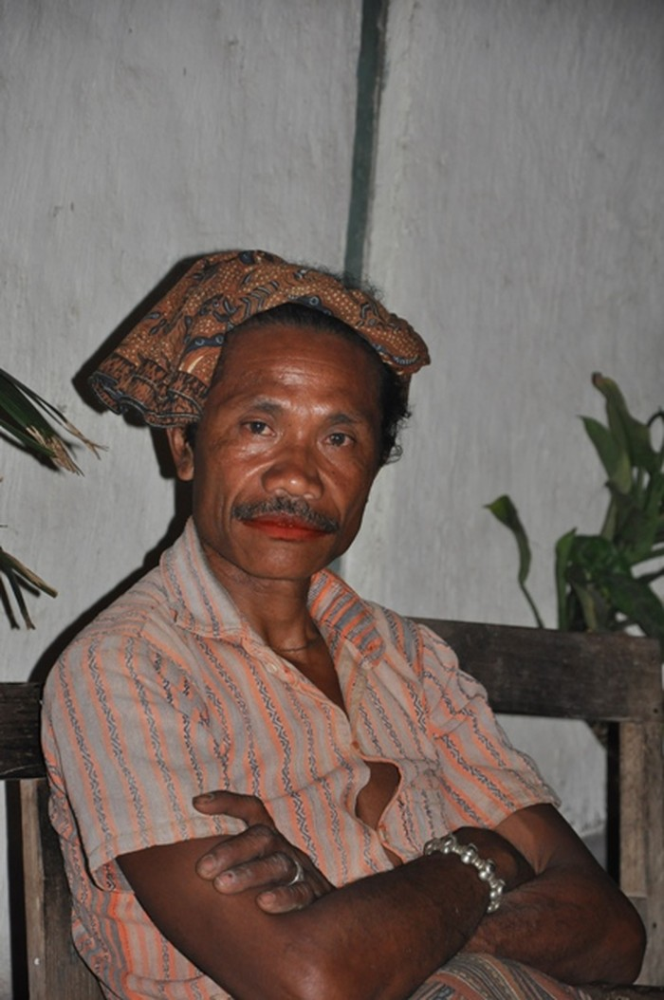
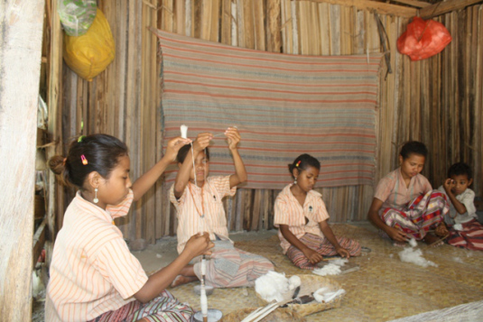
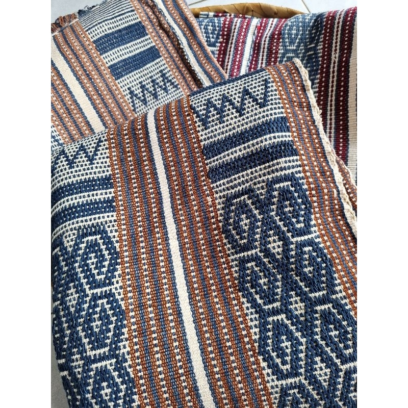

Struktur & Pembagian Komunitas
Suku Boti terbagi menjadi dua kelompok utama yang saling berdampingan:
- Boti Dalam: Warga yang teguh mempertahankan tradisi murni dan hukum adat leluhur.
- Boti Luar: Masyarakat yang telah berinteraksi dengan modernisasi dan pendidikan formal.
🎙️ Narasi Audio Interaktif (AI TTS)
Dengarkan pengantar singkat mengenai kebudayaan Suku Boti untuk aksesibilitas pembaca:
Identitas Kebudayaan
📍 Lokasi: Kec. Ki'e, Kab. TTS, NTT
👑 Pemimpin Adat: Usif (Raja Boti)
🌿 Prinsip Hidup: Harmonisasi Alam & Manusia
🗣️ Bahasa Utama: Uab Meto
Pilih Topik Eksplorasi
v2: Profil & Komunitas Adat Suku Boti
Mengenal struktur kepemimpinan, silsilah Raja (Usif) Boti, serta pembagian wilayah komunitas Boti Dalam dan Boti Luar.
Kepemimpinan Usif (Raja) Boti

Usif (Raja) Boti - Pemimpin Adat dan Spiritual Komunitas Boti Dalam
Komunitas Boti Dalam dipimpin oleh seorang Usif (Raja Boti) yang bertindak sebagai pemimpin adat, hakim peradilan adat, sekaligus pengayom spiritual warga. Kepemimpinan ini diturunkan secara turun-temurun berdasarkan garis keturunan adat.
v3: Falsafah Ukun - Lais & Kepercayaan Halaika
Masyarakat Suku Boti Dalam hidup berdasarkan prinsip Ukun - Lais (Hukum Adat dan Pandangan Hidup) yang menyatu erat dengan kepercayaan lokal Halaika.
Prinsip Keseimbangan Alam & Manusia
Dalam pandangan hidup Suku Boti, Uis Neno (Dewa Langit/Pencipta) dan Uis Afu (Dewa Bumi/Pelihara) dipuja sebagai sumber kehidupan. Hukum adat melarang pengrusakan lingkungan dan mewajibkan penghormatan terhadap alam sekitar.
Setiap pelanggaran adat diselesaikan secara musyawarah di bawah pimpinan Raja (Ratu) Boti tanpa menggunakan sistem hukum formal.
AI NMT Translation Integration
Terjemahkan istilah bahasa daerah Uab Meto secara otomatis:
Uis Neno: Dewa Langit / Penguasa Alam Atas
Uis Afu: Dewa Bumi / Pemelihara Kehidupan
Ukun - Lais: Hukum Adat dan Pandangan Hidup Keseimbangan
v4: Galeri Motif & Tenun Ikat Boti
Koleksi motif tenun tradisional Suku Boti yang dibuat menggunakan bahan dan pewarna alami dari tumbuhan lokal.
Motif Khas & Pewarnaan Alami
Proses pembuatan tenun ikat Boti memakan waktu bulanan, mulai dari memintal kapas lokal hingga pewarnaan menggunakan akar mengkudu dan daun tarum.


v5: Peta Wilayah Adat & Audio Bahasa Uab Meto
Pemetaan geografis lokasi Suku Boti di Timor Tengah Selatan serta direktori audio fonetik Bahasa Uab Meto.
Lokasi Geografis Desa Boti
Desa Boti terletak di Kecamatan Ki'e, Kabupaten Timor Tengah Selatan (TTS), Nusa Tenggara Timur. Terisolasi oleh pegunungan dan perbukitan, wilayah ini terbagi atas kawasan permukiman adat Boti Dalam dan kawasan Boti Luar.
Kamus Audio Bahasa Uab Meto
Dengarkan sampel ujaran salam adat dalam bahasa Uab Meto: